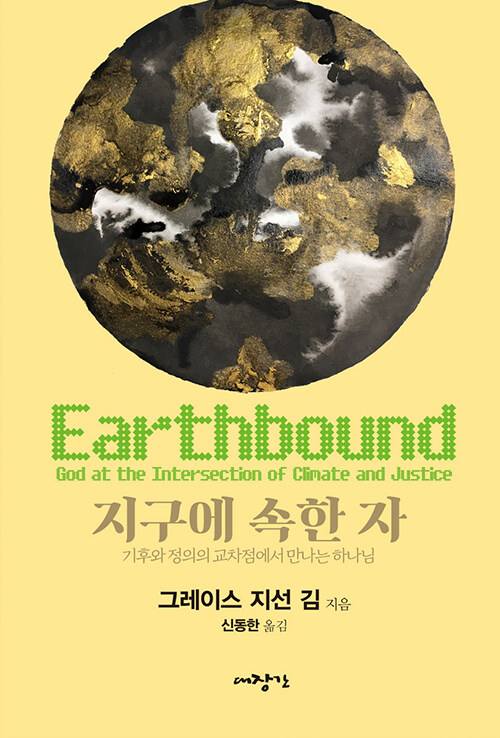

서울에서 태어나 북미에서 가르치는 신학자의 첫 한국어 책. 기후 위기는 환경 문제가 아니라 신학 문제라는 주장을, 서구와 아시아 신학을 가로지르는 ‘교차의 언어’로 풀어낸다.

엠마오 · 신간 프리뷰
지구에 속한 자
기후와 정의의 교차점에서 만나는 하나님
- 출판사
- 대장간
- 출간
- 2026. 07. 28
- 쪽수
- 192쪽
- ISBN
- 9788970718088
- 원제
- Earthbound: God at the Intersection of Climate and Justice
- 분야
- 종교/역학 › 기독교(개신교) › 기독교(개신교) 목회/신학 › 신학일반
정가 15,000원비북스 13,500원
주문 확인 후 보통 2–4일 안에 입고됩니다 (도매처 재고 기준). 매장 픽업 또는 택배
이 책을 추천한 글
1편 · 1명의 추천
기후 위기를 환경 문제가 아니라 신학의 문제로 다시 묻는다. 한국에서 태어나 캐나다로 이민한 장로교 목사이자 조직신학자 그레이스 지선 김은 자신의 정체성과 신앙 여정을 통해 기후와 정의의 교차점을 성찰한다. 물, 불평등, 하나님 이미지, 성령, 희망을 따라 기후 위기가 경제·젠더·인종·선주민의 삶을 서로 다르게, 그러나 서로 얽혀서 파괴하는 방식을 살핀다.
"하나님은 동사이시다"라는 핵심 명제로 하나님을 고정된 명사가 아니라 사랑하고 창조하고 숨 쉬시는 동사로 다시 상상할 것을 제안한다. 한국어의 정(情), 기(氣), 한(恨)을 신학적 자원으로 끌어들이고, 흑인신학, 에코페미니즘, 선주민 생태신학, 해방신학의 통찰을 아우르며 대안적 하나님 이해를 모색한다. 백인 남성 중심의 하나님 이미지가 가부장제·인종차별·환경 파괴를 어떻게 정당화해 왔는지도 분석한다.
세계교회협의회에서 기후정의 실무를 담당해 온 저자의 현장 경험을 바탕으로 팔레스타인 물 분쟁, 스탠딩 록, 미시간주 플린트 사태 등 구체적 사례를 다룬다. 세례, 추석과 송편, "빨리빨리" 문화 같은 개인적 기억을 통해 희망을 관념이 아니라 실천으로 제시하며, 각 장 끝의 "함께 나누고 싶은 질문들"은 개인 묵상과 교회 소그룹 스터디에 활용할 수 있다. 기후 위기 앞에서 신앙인이 무엇을 믿고, 어떻게 슬퍼하고, 어떻게 행동해야 하는지를 묻는 실천적 초대장이다.
- 한국의 독자들에게
- 감사의 말
- 서론
- 1. 생명의 물
- 2. 교차하는 불평등
- 3. 기후와 정의의 교차점에서의 신학적 성찰
- 4. 하나님은 동사이시다
- 5. 희망으로 살아가기
- 6. 결론